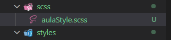
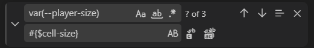

Intro to SCSS
Intro
Aqui iremos continuar com a mesma estrutura de "game" de nossa aula anterior, porém faremos algumas modificações e aprenderemos a fazer a instalação do pré-processador SCSS.
Aqui iremos continuar com a mesma estrutura de "game" de nossa aula anterior, porém faremos algumas modificações e aprenderemos a fazer a instalação do pré-processador SCSS.
Como já havíamos dito anteriormente, mesmo que nosso site funcione corretamente com os calcs que usamos, isso acaba gerando problemas devido aos cálculos estarem sendo feitos constantemente no navegador do usuário, gerando mais processamento.
Para resolvermos esse problema temos que fazer esses cálculos antecipadamente, e os pré-processadores nos ajudam com isso. Eles convertem nosso código em uma sintaxe estendida, podendo ser LESS, SASS ou SCSS. Existem muitos pré-processadores diferentes.
O navegador entende apenas a sintaxe CSS. Os pré-processadores, em comparação com o CSS puro, proporcionam recursos e oportunidades adicionais.
Agora iremos começar a instalação de nosso SCSS. Para isso podemos acessar esse link.
1) Primeiro iremos abrir nosso terminal e digitar o seguinte comando: npm install -g sass. Com isso faremos a instalação.
2) Após isso, iremos em nosso arquivo desejado
CSS e modificaremos seu nome de
.css para .scss.

3) Feito isso, nosso arquivo não será aceito diretamente pelo navegador. Agora iremos convertê-lo para CSS. Para isso iremos ao nosso terminal novamente.
4) Escreveremos o comando: sass aulaStyle.scss style.css.
4.5) Observações: primeiro precisamos estar na pasta onde está o arquivo SCSS, usando o comando cd. Depois, no comando sass aulaStyle.scss style.css, o primeiro nome representa o arquivo SCSS que será lido, e o segundo representa o arquivo CSS que será gerado após a conversão.
Feito tudo isso, agora iremos começar a utilizar os recursos do SCSS.
Iremos começar pelas variáveis que antes usávamos com --variavel e agora serão utilizadas com $variavel.
Para isso iremos começar apertando CTRL + F para fazer uma correção rápida, selecionar várias opções e modificar de forma mais prática.
Ao invés de já inserirmos o código corretamente, usamos o
#{variavel}. Assim conseguiremos identificar as
partes alteradas, conferindo se está tudo correto antes de apagar o
#{}.

Nosso caminho do CSS no HTML deve apontar para o arquivo gerado pelo SCSS, no caso: href="assets/scss/style.css".
Após corrigirmos o código, podemos excluir os calc, isso porque o SCSS nos permite fazer cálculos diretamente com variáveis.
O arquivo .map é criado automaticamente pelo Sass e serve para ajudar o navegador a identificar de qual linha do arquivo SCSS o código CSS foi gerado.
Isso facilita bastante durante o desenvolvimento e depuração, pois mesmo utilizando o CSS compilado, o navegador consegue mostrar as referências do arquivo original .scss.
Normalmente não modificamos esse arquivo manualmente.
Conteúdo da aula